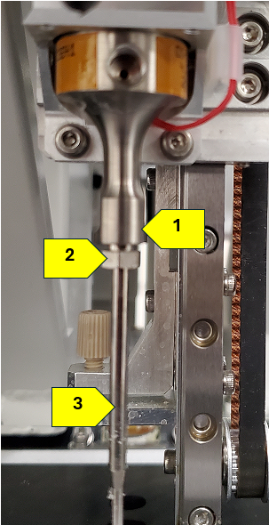

Replacing the Probe Tip and Retaining Nut
This topic includes information about how to replace the probe tip and retaining nut for the reagent pipettor.
Safety Reminder
Servicing the DxI 9000 instrument involves potential risks for pinch and puncture, electrical shock, and exposure to hazardous materials. You must mitigate these risks by taking appropriate countermeasures. See Safety for more information.
| Table of Contents |
|---|
| Recommended Tools |
| Preparing the Reagent Pipettor for Replacing Components |
| Removing the Probe Tip and Retaining Nut |
| Installing the Probe Tip and Retaining Nut |
| Alignments |
| Verification |
Recommended Tools
The following tools are required for replacement of the components listed in this topic.
- 5/16 Wrench
- 1/4 Wrench
- Optional: Click and Seal (CnS) Wrench

- Pipettor Probe Torque Tool/Wrench

- 2 mm Hex Allen Wrench
Preparing the Reagent Pipettor for Replacing Components
Perform this procedure to prepare the reagent pipettor for replacing components.
- Turn off the instrument. See Turning Off the Instrument for more information.
- Open the center cover panel.
- Pull the reagent pipettor assembly forward toward the front of the instrument.
- Drain the reagent pipettor fluid.
- Place a kimwipe or similar absorbant material below the reagent pipettor probe.
- Disconnect the fluidics tubing plastic fitting on the side of the transducer.
Note: Because some residual fluid may leak from the end of the fluid tubing, wrap it with a kimwipe or paper towel to be sure nothing drips into the instrument.
- Leave the tubing plastic fitting disconnected until instructed to reconnect.
Warning:- When removing the reagent pipettor retaining nut and tip:
- Do not damage the fluidics tubing plastic fitting on the side of the transducer.
- Do not rotate the Transducer Assembly during removal because it may lead to damage or performance issues.
- Do not strip or damage the retaining nut because you must reuse it.
- Do not drop the retaining nut and tip into the reagent storage compartment.
- When installing the reagent pipettor retaining nut and tip:
- Do not rotate the transducer assembly during installation because it may lead to damage or performance issues.
- Do not drop the retaining nut and tip into the reagent storage compartment.
- Do not tighten the nut with 1/4 wrench to avoid damage.
- You must use the torque wrench to tighten the regent pipettor retaining nut.
- When replacing the ultrasonics transducer:
- Do not damage the fluidics tubing plastic fitting on the side of the transducer.
- Do not damage the transducer electronic connectors and wires.
- Do not bend the transducer probe (tip).
Removing the Probe Tip and Retaining Nut
Perform this procedure to remove the probe tip and retaining nut.
- Locate the pipettor transducer tip base
1 and the pipettor transducer tip retaining nut
2.

- Use the 5/6 Wrench to grip the base and use a 1/4 Wrench to loosen the retaining nut.
- Use your hand to unscrew and remove the retaining nut and tip from the pipettor transducer.
- Remove the pipettor tip 3 from the retaining nut and discard the tip.
- Remove the wrenches and set them to the side.
- Inspect the retaining nut for damages.
- If there is visible damage, replace it.
- If there is no visible damage, the nut can be reused.
Installing the Probe Tip and Retaining Nut
Perform this procedure to install the probe tip and retaining nut.
- Insert a new pipettor tip into the retaining nut.
- Use both hands to align the retaining nut and tip to the pipettor transducer base.
- Screw and tighten the retaining nut by hand.
- Insert the torque wrench beneath the pipettor tip.
- Slide the pipettor transducer assembly downward and slide the torque wrench to the retaining nut.
- Use the 5/16 wrench to hold the transducer base in place.
- Use the torque wrench to tighten the retaining nut until the two prongs on the torque wrench contact one another.
- Free the torque wrench from the retaining nut and slide the pipettor transducer assembly upward.
- Slide the torque wrench down and out from beneath the pipettor tip.
- Push the reagent pipettor assembly backward toward the back of the instrument to its original location.
- Reconnect the fluidics tubing plastic fitting onto the side of the transducer and tighten the fitting until it clicks.
- Turn on the instrument. See Turning On the Instrument for more information.
Alignments
Perform alignments to reagent shuttle/build carriage, the wash tower, and reagent storage (pipetting nest). See Adjusting and Aligning the Reagent Pipettor for more information.
Verification
Complete the verification of service repair. See Verification of Service Repairs for more information.